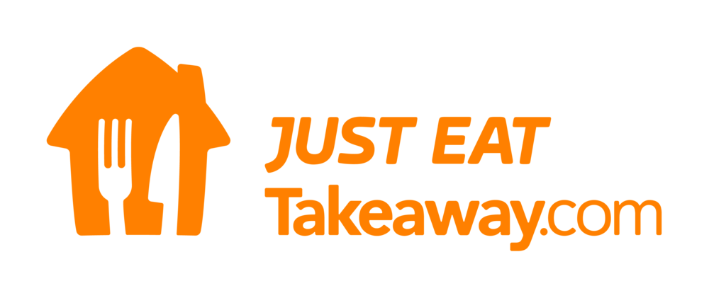
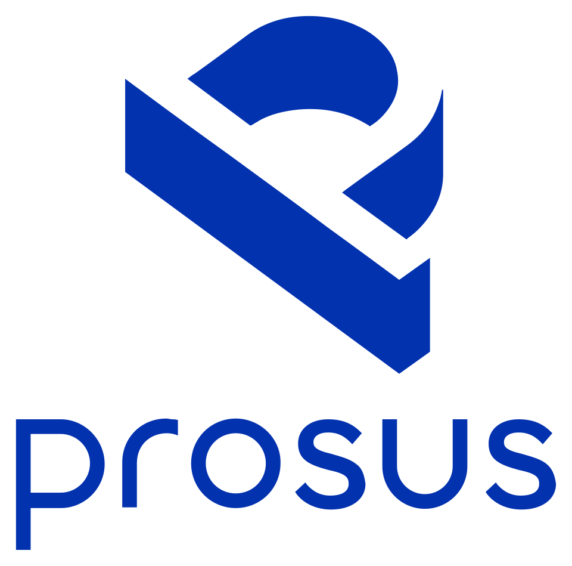
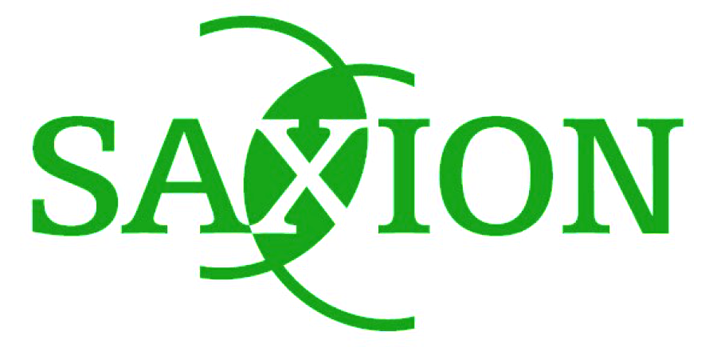

Experience
Career Timeline


Just Eat Takeaway.com · Amsterdam, The NetherlandsSenior AI Engineer
Jun 2026 – Present- Architecting Agentic AI Frameworks to drive an AI-First Finance transformation across global operations
- Facilitating the Prosus AI Multipliers Bootcamp and mentoring AI & Data roles globally
- Leading C-suite & senior Leadership AI training workshops and enterprise hackathons in collaboration with Prosus (Toqan platform)
Senior Data Analyst
Nov 2025 – Jun 2026- Built a statistical financial model for accrued expenses, delivering €2.8M in annual cost of finance savings
- Acting Data Lead for 5 data analysts, driving alignment and technical roadmap of financial data
- Architected the enterprise BigQuery AP datamart, establishing a scalable single-source-of-truth
- Implemented data-driven net cash reconciliation for 300M+ annual delivery orders
Data Analyst
May 2024 – Oct 2025- Product Owner of the AP data analytics platform (GCP, dbt, Looker) for 1,500+ users, cutting reporting lag from ~5 days to Day 1
- Deployed semi-supervised ML fraud detection models monitoring €10M+ annual expenses, identifying €250k+ in internal fraud
- Founded and led an AI & Data upskilling program for 150+ Finance Ops staff across 5+ practical workshops
Agilent Technologies · Waldbronn, Germany
Project Manager – Data Analytics
Jun 2020 – Jul 2022- EMEA Development Lead for the global Repair-Service Management System, streamlining software and logistics workflows
- Built automated self-service analytics pipelines (Power BI, Azure, Python, SQL) for real-time enterprise KPI tracking
- Mentored and supervised Computer Science and Business Studies thesis students and technical interns
Quality Engineer
Oct 2019 – May 2020- Project Lead for the ACT Eco-Label Audit across HPLC instrument systems
- Designed standardized sustainability audit frameworks adopted organization-wide
AQ Services International · The Hague, The Netherlands
Fieldwork Specialist & Project Assistant
Feb – Aug 2018- Managed international market research audits across 6+ EMEA and UAE countries
Reha Südwest · Karlsruhe, Germany
Voluntary Civil Service
Sep 2011 – Aug 2012- Assisted in care and rehabilitation services for individuals with disabilities
Education
MSc Data Science – Cum Laude
Tilburg University · Tilburg, The Netherlands

International Business Management Saxion University of Applied Sciences · Enschede, The Netherlands
Fachhochschulreife (A-Levels) & Media Design
Akademie für Kommunikation · Karlsruhe, Germany